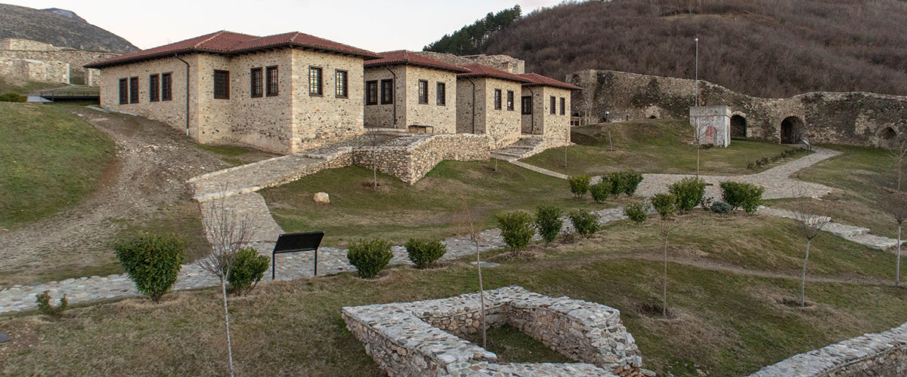

Monumentet
Karakteristikat thelbësore të Prizrenit janë kombinimi të civilizimeve të ndryshme dhe ekzistenca e veprave të bukura. Mbivendosjet e qytetit e kaluara e saj me të tashmen. Në njërën anë, arkitektura dëshmon lashtësinë e kësaj zgjidhje, ndërsa në anën tjetër të jeta e pasur kulturore e ka kthyer qytetin në epiqendra e artit bashkëkohor në Kosovë. Përmes qytetit kalon lumi Lumbardhi ku mbahen festivalet. Në Hamamin e Mehmed Pasha ekspozitën dhe panairet hapen salla, që kthejnë rrugët e Prizreni në një muze të perdes së filmit ekran Epokë pas epoke, duke filluar nga Romakja periudhë dhe duke vazhduar në osmanisht periudhën dhe më pas për të postuar Luftën Botërore II, qyteti është zhvilluar dhe me këtë ngarkesa e civilizimit feston pavarësinë e saj. Nga pragu i malit Shar buron ujë i shpejtë. Duke parë qytetin nga Topokli, e shihni sa afër osmanit Xhamia, Kisha Ortodokse dhe Katolike Katedralja janë. Qyteti ka përjetuar një shumë urrejtje e cila shkaktoi shkatërrime dhe tragjedi, por përkundër vështirësive të shumta, Prizreni është sot një simbol i bashkëjetesës dhe mirëseardhje për njerëzit që janë të gatshëm për të e vleresoj. Bregu i lumenjve të Lumbardh në qytet është të lidhura me ura. Nuk ka të dhëna për ura e parë dhe imazhi i saj, si dalja nga gryka Lumbardhi kishte një shtrat tjetër. Në Shekulli 18 mbi Lumbardh kishte nëntë ura, megjithëse vendet e urave nuk janë përcaktuar dhe nuk janë emëruar, dhe duket se ato ishin të vendosura në hapësirë e ngushtë e qytetit përkatësisht Marashit urë-Shotmanit, Liga, ura Arasta, Ura e Gurit dhe Ura e Nalet (Satani), Ura e Beledijes, ura e Suzi Çelebiut, Kaçaniku (në Tabakhana) dhe Buzagillek. Perpara se ndërtimi i Urës së Gurit dhe Suzit Çelebi një, të gjitha urat janë ndërtuar druri Prizreni nuk është vetëm qyteti më i pasur në Kosovë me ujë, por është gjithashtu një nga qytetet më të pasura në Ballkan. Përdorimi i ujit të pijshëm nga burime të shumta brenda hapësirës së qytetit është një praktikë e hershme, por të dhënat në lidhje me fillimi i përdorimit në mënyrë të organizuar bëni nuk ekzistojnë.
Regjistrime të sakta për rrjetin e furnizimit me ujë në Prizren hasen në vitet 80-të të shekullit të 16-të, gjatë sundimit osman. Përveç burimeve familjare, në vendet kyçe brenda hapësirës së qytetit si dhe pranë xhamive dhe oborret e tyre ishin ndërtuar ujë publik burimet. Sipas Salnameit të Prizrenit nga 1974, qyteti kishte 150 burime dhe deri në fund të shekullit qyteti kishte 196 burimet Një nga provat më të dukshme të strukturës historike urbane të Prizrenit janë shtëpitë e saj të vjetra ose shtëpitë urbane. Këto shtëpi ruajnë detajet e stileve dhe arkitekturave të ndryshme përfshirë ato të Orientalit dhe Austro-hungareze. Më në fund, edhe Prizreni është njihet si qendra e rëndësishme arkeologjike gjetjet. Një nga më spektakolarët zbulimet është takimi "Vrapuesi i Prizrenit" nga vitet 520 - 500 para Krishtit.